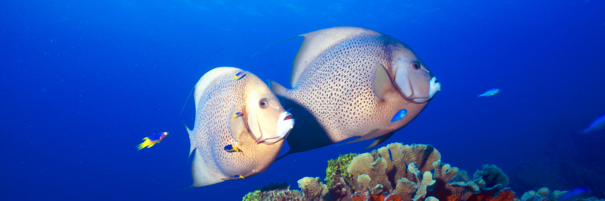
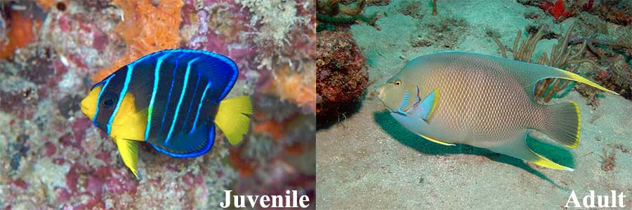
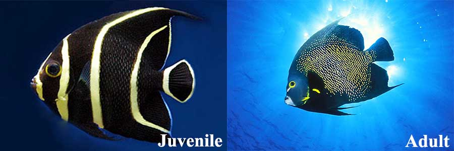

Angelfish Identification Guide
by Nicholas Hosken
Posted on 18 January 2018

Probably the most regal fish to be found on any Caribbean reef, Gray Angelfish seem to enjoy being photographed almost as we enjoying photographing them.
The Angelfish found in the Caribbean are thin and oval-shaped with adults often growing larger than 30cm/1ft. This family of fish are easily identified by their long, distinctive dorsal and anal fins. However, on closer inspection you will also notice that each member of the family has a spine, called a preopercle, located at the bottom of their operculum (gill cover) and a slightly rounded and protruding forehead. Their tiny mouths are also perfect for tugging off algae and coral polyps from off the reef. They also mate for life so if you find one you should normally be able to see their partner nearby.
BERMUDA BLUE ANGELFISH
(Holacanthus bermudensis)
The adult Bermuda Blue Angelfish can easily be confused with Queen Angelfish due to its similar blue-brown colouring with green hues and bright yellow on the tip of its tail and fins but it lacks the “crown” of its royal counterpart. Their young, however, have a completely different coloration. A young Bermuda Blue Angelfish is dark blue with a yellow tail and some yellow on its fins. It also has vertical blue bars on its body. As it ages, the bars fade away and the body colour becomes lighter and some browns and greens are added.
The Bermuda blue angelfish can grow up to 18 inches in length. It has a large mouth and comb-like teeth. It is often collected for aquariums. This fish will occasionally breed with the Queen Angelfish resulting in the very rare hybrid called the Townsend Angelfish.
FRENCH ANGELFISH
(Pomacanthus paru)
The French Angelfish is found along the western Atlantic coast from as far north as New York and the Bahamas to Brazil in the south. They are also often sighted around the Caribbean's eastern islands such as the Antilles and Roatan. They have also been observed inhabiting the eastern Atlantic from around Ascension Island and St. Paul's Rocks. They are habitually seen at depths of between 2m/7ft and 100m/330ft and can grow up to 41cm/16in.
These angelfish are usually seen in pairs on shallow reefs swimming in close proximity to fan coral. They do feast on a relatively wide range of food including algae, bryozoans, zoantharians, alcyonacea and tunicates. However their main source of nutrition is sponges which constitute roughly 70% of the species' diet but since sponges are plentiful, the fish are normally well fed.
Juveniles tend cleaning stations where they service a broad range of clients, including jacks, snappers, morays, grunts, surgeonfish, and wrasses. At the station the cleaner flutters its pectoral fins and thus signals that he is open for business. Then, when cleaning, it touches the clients with its pelvic fins.
The adult background coloration is a very dark blue but the scales of the body, except those at the front from nape to abdomen, are rimmed with golden yellow. Furthermore, the pectoral fins have a broad orange-yellow bar, the dorsal filament is yellow, the chin is whitish, the outer part of the iris is yellow, and the eye is narrowly rimmed below with blue. Juveniles are black with vertical yellow bands.
Spawning pairs are strongly territorial and usually both partners defend vigorously their territory against neighbouring pairs. During the day you will mostly see these fish out and about, but come night they will seek out shelter in their designated hiding spot which they return every night.
Their flesh considered to be of good enough quality for human consumption. It is marketed fresh in Singapore and Thailand, however it has been linked to ciguatera poisoning which is a severe form of food poisoning which can last up to 20 years. This fish has also been successfully raised in captivity. Highly prized for public and private aquaria, the French angelfish is a very hardy, long-lived, and disease-resistant species.